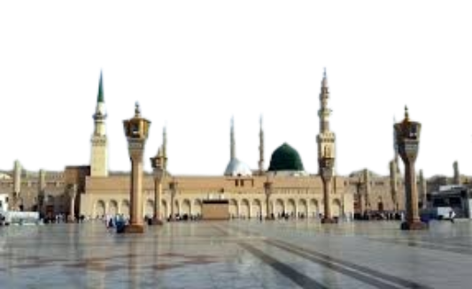

Prophet Muhammad Shrine
Prophet Muhammad (peace be upon him) is the last messenger of Islam, sent by Allah to guide humanity. Born in Makkah in 570 CE, he was known for his honesty and kindness even before prophethood. At the age of 40, he received the first revelation from Allah through the Angel Jibreel (Gabriel). He preached the message of monotheism, justice, and compassion. His life serves as a perfect example of character, mercy, and leadership for all Muslims.
Imam Ali Shrine
Imam Ali (A.S.) was the cousin and son-in-law of Prophet Muhammad (PBUH), and the first male to accept Islam. Known for his bravery, wisdom, and justice, he played a vital role in early Islamic history. He was the fourth Caliph of Islam and is deeply respected by Muslims for his piety and knowledge. Imam Ali’s sayings, especially in Nahj al-Balagha, continue to inspire people with their depth and moral guidance.
Imam Hussain Shrine

Imam Hussain (A.S.) was the grandson of Prophet Muhammad (PBUH) and the son of Imam Ali (A.S.) and Lady Fatimah (S.A.). He is most remembered for his stand against tyranny in the Battle of Karbala in 680 CE. Refusing to pledge allegiance to the unjust ruler Yazid, he sacrificed his life, along with his family and companions, to uphold truth, justice, and the principles of Islam. Imam Hussain’s courage and sacrifice remain a symbol of resistance and righteousness for all of humanity.
Imam Kazim

Imam Musa al-Kazim (A.S.) was the seventh Imam in the line of Shia Imams and the son of Imam Ja'far al-Sadiq (A.S.). He was known for his deep knowledge, patience, and worship. He spent much of his life under the harsh rule of the Abbasid caliphs and was imprisoned for many years because of his popularity and truthfulness. Despite the suffering, he remained patient and was given the title "Al-Kazim," meaning "the one who swallows his anger." He is buried in Baghdad, in the area now known as Kadhimayn.
Imam Naqi
Imam Ali al-Naqi (A.S.), also known as Imam al-Hadi, was the 10th Shia Imam and the son of Imam Muhammad al-Taqi (A.S.). He was known for his deep knowledge, noble character, and piety. Despite living under the surveillance of the Abbasid rulers, he continued to guide his followers with wisdom and spiritual leadership. Imam Naqi (A.S.) strengthened the foundation of Shi'a teachings during a time of political pressure and maintained the spiritual connection between the Imams and their followers. He is buried in Samarra, Iraq.

Imam Hasan al-Askari (A.S.) was the 11th Shia Imam and the son of Imam Ali al-Naqi (A.S.). He lived during a time of intense political oppression under the Abbasid caliphs, who kept him under constant surveillance in the military city of Samarra. Despite these restrictions, Imam Askari (A.S.) continued to guide his followers with knowledge, patience, and wisdom. He is especially known for preparing the way for his son, Imam Muhammad al-Mahdi (A.S.), the awaited 12th Imam. Imam Hasan al-Askari is buried in Samarra, Iraq, beside his father.